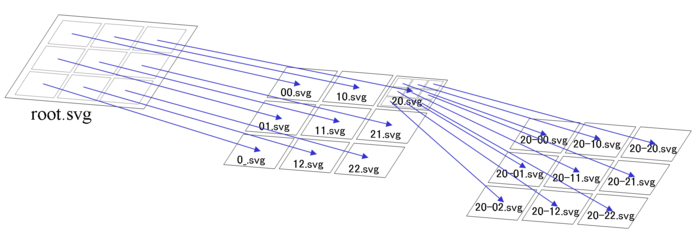
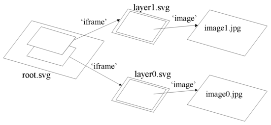
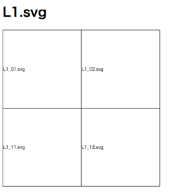
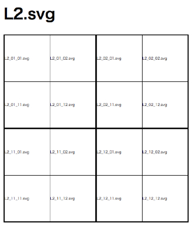
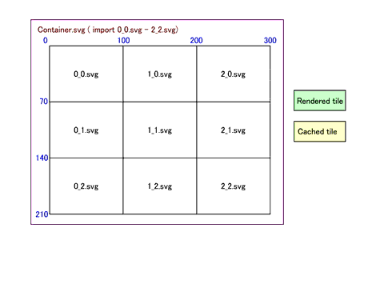
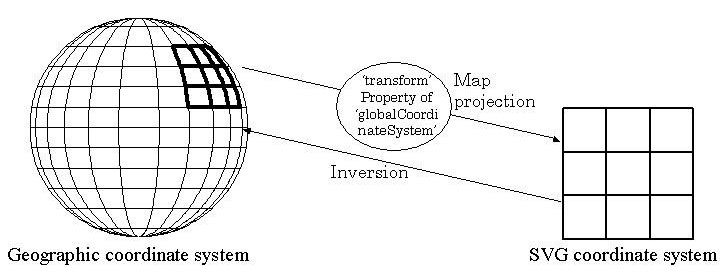
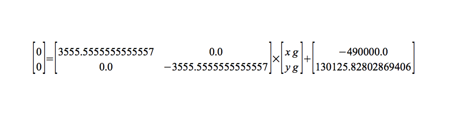
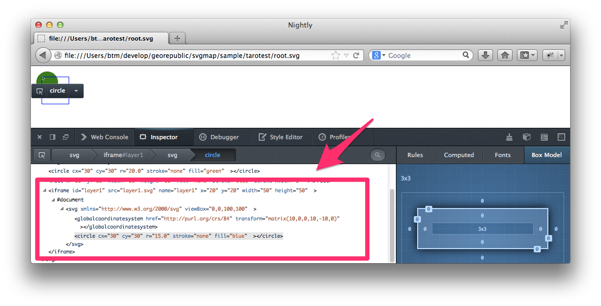

SVG Map - Tile Map Without Javascript
Taro Matsuzawa @smellman
Georepublic Japan
Topic
- Introducing myself
- Current Tile Maps
- SVG Map
- Implementation
- Demo
Introducing myself
- Programmer at Georepublic Japan
- Electro Music Lover :-)
- Also Otaku

Community
- Member of Mozilla Community in Japan. Author of two japanese books about Firefox (Firefox 3 Hacks, Firefox Hacks Rebooted)
- Member of Japan Unix Society.
- OpenStreetMap mapper.
Georepublic
- pgRouting
- Geofuse and Geothematics
- Supports OpenStreetMap and others
Maptember
I enjoy Maptember too much!

Notice...
This presentation describe some proposals to W3C.
Be careful about they are not any standards.
Current Tile Maps
Current Tile Maps
Current Tile Maps on Web are implemented by Javascript.
- Google Maps
- leaflet.js
- OpenLayers
- others
Problem in Javascript
Implementation with Javascript has some problem.
- different between javascript engines
- mobile implementation
- big javascript file
javascript engines
Sometimes programmer fails javascript hell with small different between each engine:-(
- OdinMonkey (Firefox)
- v8 (Blink or Google Chrome)
- JavaScriptCore (Webkit or Safari)
- Chakra (Internet Explorer)
Goodbye Opera.
mobile implementation
Mobile devices don't have powerful CPU.
I lied.
But too many mobile devices don't have powerful CPU.
iOS doesn't support JIT in application(UIWebView).
Only Mobile Safari supports JIT.
Big JS File
- Google Maps's HTML file(include javascript) > 200kb.
- openlayers.min.js > 300kb. (but openlayers.mobile.js is small)
- leaflet.js < 100kb :-)
It's nothing compared to loading map data, but sometimes loading big javascript file cause memory leak.
Tile Maps with Javascript has problems but time is a cure that.
However we can try another approach.
SVG Map
SVG Map is a technology implementation Tile Map using SVG.
Too many specs are developed by Satoru Takagi in KDDI(famous mobile carrier in Japan).
history
SVG Map has too long history.
KDDI took some parent about basic technology of Tile Map in 1996.
They focused research and development that called "JaMaPS" before upcoming SVG technology.
They started standard activity at W3C SVG WG in 2000.
W3C SVG 1.1
SVG 1.1 includes some result of their acitivity.
- Geographic coordinate systems (http://www.w3.org/TR/SVG/coords.html#GeographicCoordinates)
SVG Tiny 1.2
They make "Tiling and Layering Module for SVG 1.2 Tiny" spec and posted "W3C Member Submission".
- Tiling and Layering Module for SVG 1.2 Tiny (http://www.w3.org/Submission/2011/SUBM-SVGTL-20110607/)
SVGTL
This module use animation tag but it's not useful.
So they make new proposals now.
new proposals
They separated from Tiling and Layering Module to two proposal and they use iframe tag instead of animation tag.
- IFrame Like Syntax(http://www.w3.org/Graphics/SVG/WG/wiki/Proposals/IFrame_Like_Syntax)
- Global Coordinate System(http://www.w3.org/Graphics/SVG/WG/wiki/Proposals/Global_Coordinate_Systems)
Basic concept is largely similar to SVG 1.2 Tiny version.
IFrame Like Syntax
IFrame Like Syntax supports Tiling function and Layering function.
Tiling
Root SVG Document puts tiled SVG Documents with iframe and each SVG Documents also put tiled SVG Documents(cascading documents).

Layering
Put layer of SVG document, it is depending to display on viewbox and zooming.

Zooming function using extend CSS3 Media Query defined in this proposal.
Tiling and Layering example
root.svg
<iframe x="0" y="0" width="200" height="200"
media="(min-zoom: 0.5) and (max-zoom: 5)"
src="L1.svg" />
<iframe x="0" y="0" width="200" height="200"
media="(min-zoom: 5) and (max-zoom: 15)"
src="L2.svg" />
Zooming function work with extended CSS3 Media Queries.
This example will display either L1.svg or L2.svg via zoom level.
When media is not decleard, this layer will be displayed at all times.
L1.svg
<iframe x="0" y="0" width="100" height="100"
src="L1_01.svg" />
<iframe x="100" y="0" width="100" height="100"
src="L1_02.svg" />
<iframe x="0" y="100" width="100" height="100"
src="L1_11.svg" />
<iframe x="100" y="100" width="100" height="100"
src="L1_12.svg" />
L1_01.svg
<image xlink:href="L1_01.png" />
L1.svg contains 4 iframes sorted tiled.
L2.svg
<iframe x="0" y="0" width="100" height="100"
src="L2_01.svg" />
<iframe x="100" y="0" width="100" height="100"
src="L2_02.svg" />
<iframe x="0" y="100" width="100" height="100"
src="L2_11.svg" />
<iframe x="100" y="100" width="100" height="100"
src="L2_12.svg" />
L2.svg looks like L1.svg.
L2_01.svg
<iframe x="0" y="0" width="50" height="50"
src="L2_01_01.svg" />
<iframe x="50" y="0" width="50" height="50"
src="L2_01_02.svg" />
<iframe x="0" y="50" width="50" height="50"
src="L2_01_11.svg" />
<iframe x="50" y="50" width="50" height="50"
src="L2_01_12.svg" />
L2_01_01.svg
<image xlink:href="L2_01_01.png" />
Layer 2 contains 4 times 4 (= 16) SVG Documents.
Layer1 figure

Layer2 figure

Dynamic Loading
Browser will dicide loading documents with CSS3 Media Queries and view-port.
Loaded Document will cached in browser.

Global Coordinate System
SVG provides function to geographic coodinates.
However, we need to simplify a implementation to specific geographic coordinate system.
Global Coordinate System provides a function to share a coodinate system by declearing a common coordinate system between plural documents.

<?xml version="1.0"?>
<svg xmlns="http://www.w3.org/2000/svg">
<GlobalCoordinateSystem id="gcs"
transform="matrix(100,0,0,-100,0,0)"
href="http://purl.org/crs/84"/>
.....The actual content.....
</svg>
attributes
- href="
"
This attribute specifies the global coordinates system of the SVG document. That is, this is an identifier for a coordinate system.
- transform = "
" | "none"
This transform attribute specifies the conversion parameters from global coordinate system to user coordinate system of the document.
transform
- Xs: X coordinate of SVG user coordinate system
- Ys: Y coordinate of SVG user coordinate system
- Xg: X coordinate of global coordinate system
- Yg: Y coordinate of global coordinate system
- a , b , c , d , e , f: The applicable values of parameters(SVG transform(a,b,c,d,e,f) )
When transform is not declared, use transform(1,0,0,1,0,0) as a default.
calculate coodinate example
<globalCoordinateSystem
id="gcs"
href="http://purl.org/crs/84"
transform="matrix(3555.5555555555557,0.0,0.0,
-3555.5555555555557,-490000.0,130125.82802869406)" />
<g >
<image xlink:href="http://ecn.t0.tiles.virtualearth.net/
tiles/r133002100000.jpeg?g=849&mkt=ja-JP&shading=hill"
preserveAspectRatio="none" x="0" y="0"
width="312.5" height="251.002021"/>
- a: 3555.5555555555557
- b: 0.0
- c: 0.0
- d: -3555.5555555555557
- e: -490000.0
- f: 130125.82802869406
- Xs: 0
- Ys: 0

script
def parse(args)
a = args[0]
b = args[1]
c = args[2]
d = args[3]
e = args[4]
f = args[5]
xs = args[6]
ys = args[7]
ma = Matrix[[a, c],
[b, d]]
v = Vector[xs - e,
ys - f]
ret = ma.inv*v
p ret
p "#{ret[1]},#{ret[0]}"
end
result
$ ruby convert_matrix.rb 3555.5555555555557 \
0.0 0.0 -3555.5555555555557 -490000.0 \
130125.82802869406 0 0
Vector[137.8125, 36.597889133070204]
"36.597889133070204,137.8125"
Browser behavior
Any browser behaviors such as drag scrolling and zooming with mouse scroll are not defined in thier spec.
Browser maybe provide basic behaviors, and other controls such as zoom bar are apply on web page.
Summary
- Tile Map's basic function is provided by SVG Iframe.
- Coodinate system is provided by GlobalCoordinateSystem.
- Broswer behavior is not defined.
Implementation
Both SVG Tiny 1.2 and Iframe Proporsal implemented on many browsers.
- Internet Explorer SVG Plugin
- AJAX
- Chrominum
- Firefox add-on
- Firefox Native
Internet Explorer SVG Plugin
It's called svgmaptoolkit.
Supports Windows Vista (32bit), Windows XP, Windows 2000.
You can get from SVG MAP Lab.
{kind=link}
AJAX
Animation tag version (SVG Tiny 1.2 SVGTL) avaiable.
Basic functions are implemented by Javascript.
It's support many modern browsers.
You can access from SVG Map developer information.
Chrominum version
Developed by KDDI partner.
It supports IFrame proposals and GlobalCoordinateSystem.
We don't know current status and where are patches on internet:-(
Firefox add-on
Animation tag version (SVG Tiny 1.2 SVGTL) avaiable.
It is based on AJAX implementation.
All code available in github(https://github.com/Georepublic/svgmap_addon).
Firefox Native
Iframe implementation is difficult in Firefox add-on, because iframe in SVG is not avaliable and can't access DOM tree. Also Firefox OS dosen't support add-on/extension.
We try to implementation but currently don't work.
All code also available in github(https://github.com/Georepublic/mozilla-central).

Demo
{kind=link}
Plan
I will continue to implmentation for Firefox.
I will make a issue in bugzilla.
Thank you
Please contact me:
- Taro Matsuzawa: taro@georepublic.co.jp
Link:
- This presentation : (http://smellman.github.io/presentation/svgmap/index.html)
- SVG Map developer information : (http://svg2.mbsrv.net/devinfo/)